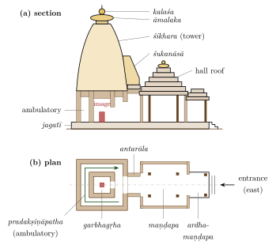
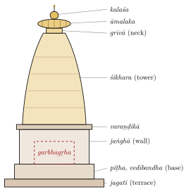
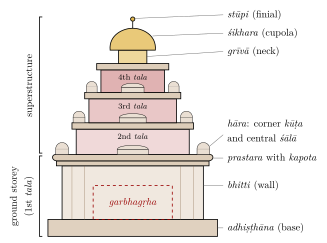
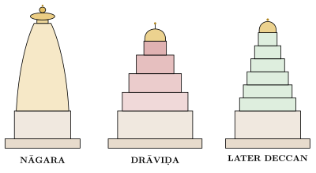
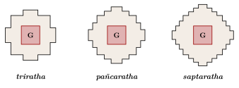
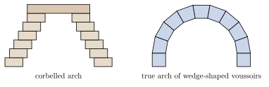
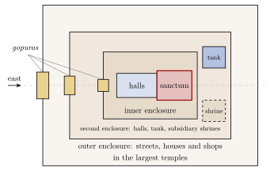

Chapter 4: Temple Architecture: Nāgara, Drāviḍa and Vesara¶
4.1 The Temple as the House of a God¶
The Hindu temple is, in the first place, a house for a deity who is present in a consecrated image or emblem. Its common names say as much: devagṛha or devālaya (“house of the god”), prāsāda (“palace”), mandira (“dwelling”), and in Tamil kōyil (“house of the lord”). Worship in the temple is modelled on the service of an honoured guest or a king: the deity is woken, bathed, dressed, fed, entertained and put to rest, and taken out in procession on festival days. The architecture serves these rites: a small, dark sanctum for the image, a hall or halls for the worshippers and the temple staff, space for circumambulation, kitchens, stores and tanks, and, in large temples, enclosures for festivals and processions.
The texts also give the temple a cosmic meaning. Its superstructure is compared to a mountain, and several temple types bear the names of mountains (Meru, Mandara, Kailāsa); the Bṛhatsaṃhitā (ch. 56) lists twenty kinds of temple beginning with Meru (Bhat 1981). The plan is laid out on the vāstupuruṣamaṇḍala (Chapter 2), and the vertical axis that rises from the image through the centre of the superstructure has been interpreted, notably by Stella Kramrisch, as a link between the world of humans and the divine (Kramrisch 1946). Kramrisch’s reading has been very influential; later scholars have accepted much of it while warning against attributing a single symbolic programme to temples of every period and region (Michell 1977; Hardy 2007).
4.2 The Parts of a Temple¶
Despite great regional variety, most Hindu temples share a set of elements, shown for a northern temple in Figure 4.1; equivalent northern and southern terms are given in Table 4.1.
- Garbhagṛha (sanctum)
- The “womb-house”, a small, usually square chamber containing the image, normally entered by a single door on the main axis and lit only through it.
- Superstructure
- The tower over the sanctum. Modern writers usually call it śikhara in northern temples and vimāna in southern ones. The terms are not used in quite this way in the southern texts, where vimāna refers to the whole shrine building from base to finial and śikhara to its crowning dome-like member.
- Antarāla (vestibule)
- A short passage between the sanctum and the hall.
- Maṇḍapa (hall)
- An open or closed pillared hall in front of the sanctum, sometimes several in a row: an entrance porch (mukhamaṇḍapa or ardhamaṇḍapa), a closed hall (gūḍhamaṇḍapa), an open hall for dance or assembly (raṅgamaṇḍapa, nṛttamaṇḍapa, sabhāmaṇḍapa).
- Pradakṣiṇāpatha (ambulatory)
- A path for clockwise circumambulation of the sanctum, either inside the building, between the sanctum wall and an outer wall (a sāndhāra temple), or outside it (a nirandhāra temple).
- Base
- A moulded base (adhiṣṭhāna in the South, pīṭha and vedībandha in the North), often standing on a further platform (upapīṭha, or jagatī in the North).
- Enclosure and gateways
- An enclosure wall (prākāra), with gateways (in the South, gopura), and subsidiary shrines, halls, tanks and kitchens within it. Enclosures are characteristic of southern temples but are also found in the North, for example in Odisha.

| Element | Northern (Nāgara) | Southern (Drāviḍa) |
|---|---|---|
| Superstructure | śikhara; in Odisha gaṇḍī | tiered superstructure (tala) of the vimāna |
| Crowning members | āmalaka (ribbed disc) and kalaśa (pot) | śikhara (cupola) and stūpi (finial) |
| Base | pīṭha, vedībandha | upapīṭha, adhiṣṭhāna |
| Wall | jaṅghā | bhitti (pāda) |
| Cornice zone | varaṇḍikā | prastara with kapota |
| Wall projections | ratha: bhadra, pratiratha, karṇa | bays answering to the śālā, kūṭa and pañjara above |
| Gateway | toraṇa, porch | gopura |
4.3 Nāgara, Drāviḍa and Vesara¶
4.3.1 The Terms in the Texts¶
The names Nāgara, Drāviḍa and Vesara come from the texts, but the texts use them in more than one way. In the southern texts (the Kāmikāgama, Mayamata and Mānasāra), they denote three classes of vimāna distinguished chiefly by the shape of the crowning parts (the “neck” and the cupola): square for Nāgara, octagonal for Drāviḍa, and circular (or apsidal) for Vesara. A temple of the southern type can therefore be “Nāgara” in this sense if its cupola is square (Dagens 1994). The northern texts, such as the Aparājitapṛcchā, use a different classification, which includes Nāgara, Drāviḍa, Bhūmija, Latina and other types (Mankad 1950).
4.3.2 The Terms in Modern Art History¶
Modern art historians use Nāgara for the temple form of northern and central India with a curved tower, and Drāviḍa for the southern form with a tiered superstructure of miniature shrines. These two are genuinely distinct architectural languages, each with its own system of composition. The term Vesara has been used for the temples of the Deccan, between the two; but its meaning is disputed. Early Cālukya temples of the 7th and 8th centuries, at Aihoḷe, Bādāmi and Paṭṭadakal, are not hybrids: they include fully northern and fully southern temples standing side by side. Adam Hardy treats the southern temples of Karnataka, from the early Cālukyas to the Hoysaḷas, as a single “Karṇāṭa Drāviḍa” tradition, in which, from the 11th century, the tiers of the superstructure are broken into so many small, staggered elements that the tower acquires an almost continuous profile. He distinguishes from this tradition a separate mode, which he calls Vesara, that emerged in the later Cālukya period and combines the principles of Drāviḍa and Nāgara composition in a hybrid form (Hardy 1995, 2007). The Encyclopaedia of Indian Temple Architecture, edited by Michael Meister, M. A. Dhaky and Krishna Deva, follows a regional and dynastic arrangement that avoids forcing temples into three boxes (Meister et al. 1983).
4.4 The Nāgara Temple¶
4.4.1 Characteristics¶
The Nāgara temple of northern and central India has a square sanctum and a superstructure (śikhara) that curves inward as it rises, crowned by a large ribbed disc (āmalaka) and a pot-shaped finial (kalaśa). The walls are broken by vertical projections (ratha): a central projection (bhadra), corner projections (karṇa) and, in larger temples, intermediate projections (pratiratha), which continue up through the tower. The surface of the tower is covered with a mesh of horseshoe-arch motifs (gavākṣa, candraśālā). Many northern temples stand on a high terrace (jagatī) instead of within an enclosure, but enclosed precincts are common in Odisha and elsewhere.
4.4.2 Types of Nāgara Superstructure¶
Art historians, following the northern texts, distinguish several types of Nāgara superstructure (Meister et al. 1983; Hardy 2007) (Table 4.2):
| Type | Form | Examples |
|---|---|---|
| Latina | A single curved spire with continuous bands (latā) running up each face | Galaganātha, Paṭṭadakal (8th c.); early Odishan rekhā temples such as Paraśurāmeśvara, Bhubaneswar |
| Śekharī | A central spire clustered with smaller half-spires (uruśṛṅga) and miniature spires | Kandariyā Mahādeva and Lakṣmaṇa temples, Khajuraho |
| Bhūmija | Rows of miniature spires arranged in storeys between vertical bands | Udayeśvara, Udayapur (Paramāra, 11th c.); Gondeśvara, Sinnar |
| Phāṃsanā | A pyramidal roof of horizontal slabs | Halls and smaller shrines; the Odishan pīḍhā roof |
| Valabhī | A barrel-vaulted (“wagon”) roof over an oblong sanctum | Telī kā Mandir, Gwalior; Vaitāl Deuḷ, Bhubaneswar |

4.4.3 Anatomy of a Latina Tower¶
A Latina tower is composed with great regularity (Figure 4.2). Its central projection carries a continuous band, the latā (“creeper”), covered with a mesh of interlocking horseshoe-arch motifs, which runs from the base of the tower to the top. The corner projections are divided into storeys (bhūmi) by small ribbed discs (bhūmi-āmalaka), five storeys being common in medium-sized temples, so that the tower is read as a stack of diminishing floors drawn inward along a curve. At the top, the tower narrows to a “shoulder” (skandha) and a recessed “neck” (grīvā) carrying the great āmalaka, the kalaśa and, in many temples, a flag-pole. On the front of the tower, above the vestibule, a large projecting gable called the śukanāsā (“parrot’s beak”) frames an image or an emblem of the deity. The curve of the tower was set out by geometrical methods, and its profile is one of the most characteristic features of each regional style.
4.4.4 Development¶
The earliest surviving stone temples of the North, of the 5th century, have flat roofs (temple 17 at Sāñcī); the Daśāvatāra temple at Deogaṛh (early 6th century) and the brick temple at Bhitargaon had towers, now partly ruined. The brick tradition reached its height in the Lakṣmaṇa temple at Sirpur in Chhattisgarh, usually dated to the first half of the 7th century, which its inscription records was built by the queen Vāsaṭā in memory of her husband, the Pāṇḍuvaṃśī king Harṣagupta. Its Latina tower, of finely moulded brick, preserves the pattern of horseshoe-arch motifs and corner storeys that stone towers of the period have often lost. By the 7th and 8th centuries the Latina temple had taken its classic form, in Odisha, central India, Rajasthan and the Deccan. From the 10th century the Śekharī and Bhūmija forms multiplied the miniature spires of the tower, producing the soaring, many-peaked temples of Khajuraho (c. 950–1050) and the Paramāra temples of Mālwā. Regional schools developed their own vocabularies:
-
Odisha (Kaliṅga): the sanctum tower (rekhā deuḷa) with its massive āmalaka, the hall (jagamohana) with a stepped pyramidal pīḍhā roof, and the oblong khākharā type with a barrel roof; from the Paraśurāmeśvara (7th century) through the Liṅgarāja (11th century) and the Jagannātha temple at Puri (12th century) to Konārak (13th century) (Donaldson 1985; Boner and Rath Śarmā 1966).
-
Western India (Māru-Gurjara): the temples of the Caulukya (Solaṅkī) period in Gujarat and Rajasthan, such as Moḍherā (1026–27) and the marble Jain temples of Dilwārā, with richly carved halls and ceilings.
-
Central India: the Candella temples of Khajuraho and the Kacchapaghāta and Paramāra temples.
-
Kashmir and the Himalaya: the stone temples of Kashmir (Mārtaṇḍ, 8th century), with pyramidal roofs, trefoil arches and pediments that reflect contact with Gandhāran and Western traditions; and the timber temples of Himachal and Uttarakhand.
-
Bengal: brick temples covered with terracotta reliefs and with curved roofs derived from village huts, especially of the 16th–18th centuries (Viṣṇupur).
4.4.5 The Māru-Gurjara Temple¶
In Gujarat and Rajasthan, the temples of the 10th to 13th centuries developed a distinctive and very richly carved form, called Māru-Gurjara (“of Marwar and Gujarat”) by M. A. Dhaky, which is still built today by the Sompurā architects using the texts of Maṇḍana. Its base and wall are built up of a long sequence of named mouldings and bands of figures, described in the western Indian texts; some of the principal ones are listed in Table 4.3 (Meister et al. 1983). The halls have corbelled domed ceilings and richly carved pillars, and many temples have a decorative arched gateway (toraṇa) in front. The sun temple at Moḍherā and the Jain temples of Mount Abu and Raṇakpur are among its masterpieces (Chapter 5).
| Moulding | Form |
|---|---|
| jāḍyakumbha | Large “pot” moulding at the foot of the base |
| karṇikā | Sharp-edged fillet |
| grāsapaṭṭī | Band of grimacing “faces of glory” (kīrttimukha) |
| gajapīṭha, narapīṭha | Bands of elephants and of human figures, in the larger temples |
| khura, kumbha, kalaśa | Hoof, pot and vase mouldings of the wall base |
| kapotālī | Cornice-like moulding completing the wall base |
4.5 The Drāviḍa Temple¶
4.5.1 Characteristics¶
The Drāviḍa temple of southern India has a superstructure built in tiers (tala), each tier carrying a parapet of miniature buildings: square pavilions (kūṭa) at the corners, oblong barrel-roofed pavilions (śālā) in the middle of each side, and smaller elements (pañjara, nīḍa) between. Above the topmost tier is a “neck” (grīvā) and a dome-like crowning member (śikhara), square, octagonal or round, with a finial (stūpi) (Figure 4.3). The walls are articulated by pilasters and niches (devakoṣṭha) for images, and topped by an entablature (prastara) with a projecting, curved cornice (kapota) decorated with horseshoe-arch motifs (kūḍu, nāsī). Large temples stand within one or more enclosures (prākāra) entered through gateways (gopura), and often have a tank (Meister et al. 1983; Hardy 2007).

Kerala developed a distinct southern tradition: sanctums that may be square, circular, oblong or apsidal, built of laterite or stone below and timber above, with steep, overhanging roofs of tiles or copper sheets suited to the heavy rainfall.
4.5.2 The Base¶
The southern texts describe many types of moulded base (adhiṣṭhāna), built up from a standard set of mouldings. The two most common families are the pādabandha, whose principal moulding is a large rounded or faceted torus (kumuda), and the pratibandha, whose upper part carries a frieze of mythical lion-like beasts (vyāla) below a projecting member (Dagens 1994). The texts name many further types, and their names and definitions differ from text to text. See Table 4.4.
| Moulding | Form |
|---|---|
| upāna | Plain plinth course |
| jagatī | Tall, vertical base course |
| kumuda | Torus: rounded, octagonal or faceted |
| kaṇṭha | Recessed “neck” or dado, often framed by thin fillets (kampa) |
| paṭṭikā | Flat band; replaced by a kapota (cornice) in some types |
| vyālavari | Frieze of vyālas, in the pratibandha type |
4.5.3 Development¶
- Pallava (7th–9th century)
- The monolithic rathas and the Shore Temple at Māmallapuram, and the Kailāsanātha temple at Kāñcīpuram (early 8th century), established the Drāviḍa vocabulary in Tamil country (Chapters 5 and 3).
- Early Cālukya and Rāṣṭrakūṭa (7th–9th century)
- In Karnataka, Drāviḍa temples such as the Virūpākṣa at Paṭṭadakal (c. 740s) stand beside northern ones; the rock-cut Kailāsa at Ellora (later 8th century; Section 3.12) is the largest Drāviḍa monument of its age.
- Chola (9th–13th century)
- Temples ranging from small, finely proportioned village shrines to the colossal royal temples of Thanjavur (completed 1010) and Gaṅgaikoṇḍacōḻapuram (Dehejia 1990).
- Later Chola, Pāṇḍya and Vijayanagara (12th–16th century)
- Expansion of temple complexes with multiple enclosures, halls of a thousand pillars and ever larger gateways; under Vijayanagara, the great temple complexes of Hampi and of the Tamil country.
- Nāyaka (16th–18th century)
- The temple cities of Madurai, Śrīraṅgam and Rāmeśvaram, with towering gopuras covered with painted stucco figures and immense columned corridors.
4.5.4 The Gopura¶
The gopura (in Sanskrit originally a town gate) is the gateway tower of the southern temple enclosure. Under the Pallavas and early Cholas gateways were modest and much lower than the main shrine; from the 12th century they grew taller, so that in the great temple complexes of the Pāṇḍya, Vijayanagara and Nāyaka periods the outer gateways, the tallest of them some 50 metres or more high, dwarf the sanctum. Several reasons have been suggested: rulers and donors could add new enclosures and gateways to an established temple without disturbing its sanctified centre; the gateways announced the temple to the city and framed its festival processions; and the old sanctum was valued for its age and sanctity rather than its size (Michell 1977).
4.6 The Temples of the Deccan: “Vesara”¶
The Deccan, between the Nāgara north and the Drāviḍa south, was the scene of the most varied experiments in Indian temple architecture.
-
Early Cālukyas of Bādāmi (6th–8th century): at Aihoḷe, Bādāmi, Mahākūṭa and Paṭṭadakal, rock-cut and structural temples in both the northern and the southern manner, together with distinctive early forms such as the apsidal Durgā temple and the Lāḍ Khān temple at Aihoḷe.
-
Rāṣṭrakūṭas (8th–10th century): the Kailāsa temple at Ellora and the Jain caves there (Chapter 3).
-
Later Cālukyas of Kalyāṇa (11th–12th century): temples at Lakkuṇḍi, Itagi, Kuruvatti and elsewhere, finely carved in greenish schist, in which the Drāviḍa superstructure is broken into close-set, staggered elements, with a stepped or stellate plan.
-
Hoysaḷas (12th–13th century): temples at Belūr (Cennakeśava, begun 1117), Haḷebīḍ (Hoysaḷeśvara) and Somanāthapura (Keśava, 1268), of chloritic schist, raised on stellate platforms, with lathe-turned pillars, densely sculptured friezes and bracket figures.
-
Kākatīyas (12th–13th century): in Telangana, temples such as the Thousand-Pillared temple at Hanamkonda (1163) and the Rāmappa temple at Palampet (1213), whose superstructure is built of unusually light brick; the popular claim that these bricks float on water has not been confirmed by any published test.
Further east, at Ālampur on the Tuṅgabhadrā in Telangana, a group of nine temples of the 7th and 8th centuries (the Navabrahma temples), built under the early Cālukyas, have northern Latina towers, showing that the boundary between “northern” and “southern” forms was not a simple geographical line. The Kākatīya temples mentioned above, with their richly carved black stone pillars and bracket figures, are a further regional variant; the Rāmappa temple was inscribed by UNESCO in 2021.
Whatever name is given to them, it is these later Deccan temples, rather than the early Cālukya ones, that mark the most distinctive contribution of the region; in Hardy’s usage the term Vesara is reserved for the hybrid mode among them, while the rest belong to the Karṇāṭa Drāviḍa tradition (Hardy 1995, 2007). See Figure 4.4.

4.7 Composition: Temples Made of Temples¶
Both the Nāgara and the Drāviḍa traditions build their superstructures out of miniature representations of shrines. On a Drāviḍa temple, each tier carries a ring of small pavilions, square, oblong and apsidal, each a reduced image of a complete building with its own base, pillars, cornice and roof; on a Nāgara temple, the tower is covered with a mesh of horseshoe-arch motifs, and in the Śekharī and Bhūmija types with whole miniature spires. Adam Hardy has called these components “aedicules” and shown how the history of temple architecture can be understood as the progressive multiplication, overlapping and interpenetration of such miniature shrines, so that the temple appears to grow outward and upward from its centre (Hardy 1995, 2007). In the mature Śekharī temples of Khajuraho, for example, half-spires (uruśṛṅga) cling to the main tower in several layers, and smaller spires cluster on its lower parts, giving the impression of a mountain range rising to a summit. In the later Deccan temples, the tiers of the southern superstructure are broken into so many staggered elements that the tower acquires an almost continuous profile.
This way of thinking explains features that might otherwise seem merely decorative. The niches on the walls, framed by pilasters and crowned by miniature roofs, are themselves small shrines; the horseshoe arches on the tower are the gable-ends of miniature buildings; and the projections of the plan carry these miniature shrines up through the whole height of the temple. The temple is, in a sense, a temple made of temples.
4.8 Doorways, Ceilings and Halls¶
The doorway of the sanctum is one of the most carefully designed parts of the temple. In northern temples from the Gupta period onwards, the door-frame is made up of several vertical bands (śākhā), carved with creepers, couples, ganas, snakes and lotus scrolls; at the base stand the river goddesses Gaṅgā and Yamunā and door guardians (dvārapāla), and at the centre of the lintel is a small image of the temple’s deity or of a related deity. Southern temples have plainer door-frames but large guardian figures on either side of the entrance.
The halls of northern temples were often roofed by corbelled domes built of concentric rings of stone, carved on the underside with tiers of figures, lotus petals and a central pendant; those of the Māru-Gurjara temples of Gujarat and Rajasthan, and above all of the Jain temples of Mount Abu and Raṇakpur, are of extraordinary richness (Chapter 5). Southern halls are usually flat-roofed, carried on many pillars; the great pillared halls of the Vijayanagara and Nāyaka periods, such as the thousand-pillared halls of Madurai and Śrīraṅgam, are designed for festivals, assemblies and the display of processional images. Many temples also have a separate hall for dance and music (nāṭamaṇḍira in Odisha, nṛttamaṇḍapa in the South) and, in Kerala, a theatre (kūttambalam).
4.9 Plans¶
4.9.1 Projections¶
Northern temple plans are classified by the number of projections on each face of the sanctum: three (triratha: a central bhadra and two corner projections), five (pañcaratha), seven (saptaratha) and nine (navaratha). The projections are carried up through the base, the wall and the tower, so that the plan determines the whole three-dimensional form of the temple (Figure 4.5).

4.9.2 Groups of Shrines¶
Many temples are not single buildings but groups. In the pañcāyatana (“five-shrined”) arrangement, found from the Gupta period at Deogaṛh and common in the North, a principal shrine stands at the centre of a terrace with four smaller shrines at its corners, often dedicated to related deities. Northern temples may have subsidiary shrines in their courts or on their terraces, and southern complexes have shrines for the consort goddess, for Gaṇeśa and Skanda, for the saints and for many other deities within their enclosures. Some temples have several sanctums in a row or round a common hall: double and triple temples, such as the Hoysaḷa temples of Haḷebīḍ and Somanāthapura, and the multiple shrines of Jain temples.
4.9.3 Stellate Plans¶
From the 10th century, builders in central India and the Deccan produced stellate (star-shaped) plans by rotating a square about its centre, or by setting projections at angles, so that the walls form a sequence of sharp points. The Bhūmija temples of Mālwā and the later Cālukya and Hoysaḷa temples of Karnataka, such as the Keśava temple at Somanāthapura, have such plans, which multiply the faces of the walls available for sculpture and create a play of light and shadow (Hardy 2007).
4.10 Walls and Pillars¶
4.10.1 The Northern Wall¶
In the northern temple the wall (jaṅghā) is divided vertically by the projections. The central projection (bhadra, Odishan rāhā) carries the principal niche, often with an image of a form of the main deity or of a deity of the same family; the corner projections (karṇa) often carry the guardians of the directions; the recesses between projections (salilāntara, “water channels”) carry celestial women, ascetics and mythical beasts. In large temples, such as those of Khajuraho, the wall carries two or three registers of sculpture.
4.10.2 The Southern Wall¶
In the southern temple the wall (bhitti) is articulated by pilasters into bays. The principal bays contain niches (devakoṣṭha) for images framed by pilasters and crowned by an arch or a miniature pavilion; smaller bays contain “cages” (pañjara) or decorative arches (toraṇa), sometimes with makara (crocodile-like monsters) at the ends. In Chola temples the niches carry a standard set of images: for a Śiva temple, Dakṣiṇāmūrti on the south, Liṅgodbhava or Viṣṇu on the west, Brahmā on the north, with Gaṇeśa, Durgā and others.
4.10.3 Pillars¶
Pillars (stambha) are classified in the southern texts by their section: square pillars are called brahmakānta, octagonal ones viṣṇukānta, and round or sixteen-sided ones by other names (rudrakānta, indrakānta); many pillars combine sections, square at the base and octagonal or round above. A southern pillar is made up of a base, a shaft (daṇḍa), a series of capital mouldings (in the texts laśuna, kalaśa, tāḍi, kumbha, padma) and an abacus (phalaka), and carries a bracket (potikā) that supports the beam (Dagens 1994). Bracket forms are among the best guides to the date of southern buildings. In the Vijayanagara and Nāyaka periods pillars were carved with rearing horses and composite animals (yāḷi), or as clusters of colonnettes; Hoysaḷa pillars were turned on a lathe.
4.11 Construction and Materials¶
4.11.1 Construction¶
Indian temples are, with few exceptions, trabeate: they are built of posts and beams, and openings and roofs are spanned by lintels, slabs and corbelling, in which each course projects slightly beyond the one below until the gap can be closed. Ceilings of halls are often corbelled domes made of concentric rings of stone, richly carved on the underside, as in the Jain temples of Mount Abu. The true arch was known: brick voussoir arches are found in the Gupta-period temple at Bhitargaon, and the arch was used in some Buddhist and later buildings. But it was not adopted in temple building, which kept to the trabeate system even after Indo-Islamic architecture had made the arch and dome common (Chapter 6). See Figure 4.6.

Stone temples were usually built of finely dressed blocks laid dry, without mortar, held in place by their own weight and sometimes by iron clamps or dowels; iron beams were used at Konārak and Puri. Brick temples used mud or lime mortar, and lime plaster (sudhā) was used to coat walls and to model stucco figures, especially on southern superstructures and gopuras. The claim, often repeated, that dry-stone temples are “earthquake-proof” is not correct. Unmortared masonry can accommodate small movements, and the sheer mass of a temple helps it to stand; but many temples have been damaged or brought down by earthquakes, subsidence and the failure of their foundations, and those that survive have generally been repaired.
4.11.2 Materials¶
The principal building materials are listed in Table 4.5.
| Material | Region | Examples |
|---|---|---|
| Sandstone | North and central India, Odisha, Deccan | Khajuraho, Bhubaneswar, Aihoḷe, Paṭṭadakal |
| Khondalite | Odisha | Konārak |
| Granite | Tamil Nadu, Karnataka | Thanjavur, Māmallapuram, Hampi |
| Chloritic schist (“soapstone”) | Karnataka | Hoysaḷa temples (Belūr, Haḷebīḍ, Somanāthapura); later Cālukya temples |
| Basalt (trap rock) | Western Deccan | Ellora, Elephanta, Ajaṇṭā (rock-cut) |
| Marble | Rajasthan, Gujarat | Dilwārā (Mount Abu), Raṇakpur |
| Laterite, timber, copper | Kerala | Kerala temples |
| Brick and terracotta | Gangetic plain, Bengal | Bhitargaon, Viṣṇupur |
4.12 The Ritual of Construction¶
The Mayamata, the Mānasāra and the āgamas describe the building of a temple as a sequence of rites (Dagens 1994): the examination and purification of the site; the ploughing of the ground and the offering to the vāstupuruṣa; the laying of the first stones or bricks; the placing of a consecration deposit (garbhanyāsa) in the foundations; the raising of the door-frame; the placing of a further deposit and of the crowning finial at the top of the superstructure; the installation of the image; and the consecration of the temple. In modern South Indian practice the great consecration (kumbhābhiṣeka), in which sanctified water is poured over the finials, is repeated after major repairs, traditionally about every twelve years. The Āgamic rituals of temple worship and installation are treated in Volume 6, Tantra–Āgama.
4.13 How Temples Were Built¶
4.13.1 Quarries, Transport and Workshops¶
Stone for temples was usually quarried close to the site; the builders of Thanjavur, for example, used granite from quarries some distance from the delta, while the sandstone temples of Khajuraho and Bhubaneswar stand near outcrops of their stone. Blocks were split from the bedrock with wedges driven into lines of holes, a technique whose marks can still be seen at many ancient quarries, roughly dressed on the spot, and moved on rollers, sledges, carts or rafts, with animals and large teams of labourers. Final dressing and carving were done at the site, often after the blocks had been set in place: unfinished temples and sculptures show surfaces left in the rough, waiting to be carved.
Building was organised by workshops under a master architect, with masons, carvers, sculptors, carpenters and smiths, and unskilled labour drawn from the surrounding villages. Masons’ marks, cut on blocks to identify the team that dressed them or the position in which they were to be laid, are found at many sites, from Paṭṭadakal to the Vijayanagara capital. Some temples record the names of their architects and sculptors (Section 4.14).
4.13.2 Drawings and Templates¶
Builders worked from drawings and full-size layouts. At Paṭṭadakal and a few other sites, outline drawings of temple superstructures and of mouldings are incised on rock surfaces and on the walls of temples, apparently as guides for the masons. At Bhojpur near Bhopal, where the 11th-century Paramāra temple was left unfinished, architectural drawings of the plan, elevation and details of the temple are engraved on the flat rock surfaces around it, and the earthen ramp by which stones were raised can still be traced; the site gives an unusually direct view of a medieval building in progress. Adam Hardy has shown that the Bhojpur drawings correspond closely to the procedures for designing temples set out in Bhoja’s own Samarāṅgaṇasūtradhāra, so that here, unusually, a text and a building of the same court can be read together (Hardy 2015). Templates of wood or metal were probably used to repeat profiles of mouldings, and measuring rods carried the module from which the building was proportioned.
4.13.3 Raising the Stones¶
How the upper parts of tall temples were built is not recorded in detail. Earthen ramps, timber scaffolding, levers and simple lifting tackle were all available, and the remains at Bhojpur show that ramps were used in at least some cases. Claims about specific methods at particular temples, such as the story of the ramp at Thanjavur (Chapter 5), rest on tradition unless there is archaeological evidence for them.
4.13.4 Time and Cost¶
Inscriptions occasionally give the time a temple took to build. The Bṛhadīśvara at Thanjavur, whose inscriptions record its completion in 1010, appears to have been built within about seven years; many other temples took decades, were built in stages, or were never finished. Temples were enormously costly, and inscriptions record how they were funded: by royal treasuries, by gifts of land and villages whose revenue was assigned to the temple, by donations of gold and cattle, and by contributions from merchants, guilds and individual devotees.
4.14 Architects and Their Names¶
Indian temples are usually known by the names of their gods and their royal patrons, and the vāstu texts describe the ideal sthapati without naming any real one. Yet inscriptions name a fair number of architects and sculptors, and together they give a picture of the profession (see also Volume 17, Śilpa–Kāru, and Chapter 11).
In the Deccan, inscriptions of the mid-8th century on the Virūpākṣa temple at Paṭṭadakal, built for the Cālukya queen Lokamahādevī, honour its builders: they name two masters, Guṇḍa, styled Anivāritācāri, who received honours and titles from King Vikramāditya II, and Sarvasiddhi Ācārya, whose name is linked with the southern part of the work. These records call their architect the sūtradhāri “of the southern quarter”, a phrase read by some as a reference to the Tamil country and by others to the south side of the temple. At Thanjavur, the inscriptions of Rājarāja I name the chief architect of the Bṛhadīśvara temple (Chapter 5). In the Hoysaḷa temples of the 12th and 13th centuries, sculptors signed individual images, sometimes with boastful titles, so that the work of masters such as Mallitamma, Dāsoja and his son Cāvaṇa can be identified and followed from temple to temple. The Kākatīya temple at Pālampet (1213), built by the general Recarla Rudra, is known locally as the Rāmappa temple, after the name, according to tradition, of its chief sculptor.
Western India has the richest record. The foundation inscriptions of Jain temples often name the sūtradhāra responsible: the Lūṇa Vasahī at Mount Abu (1230) is associated with the sūtradhāra Śobhanadeva, and the temple of Ādinātha at Raṇakpur (1439) with the sūtradhāra Depāka. The tower of victory built at Chittorgarh by Rāṇā Kumbhā of Mewar in the mid-15th century (the Vijaya Stambha, called Kīrtistambha in its inscriptions) records the names of its architect, Jaitā, and his sons. Kumbhā’s court architect Maṇḍana is the best known Indian architect before the modern period, because he was also an author: the Prāsādamaṇḍana on temples, the Rājavallabha on houses, palaces and towns, the Rūpamaṇḍana on images and other works are attributed to him, and members of his family are credited with further manuals. These books, written in plain Sanskrit for working builders, show a hereditary architect setting down the Māru-Gurjara practice of his own day rather than repeating an ancient canon (Meister et al. 1983).
The Sompurās of Gujarat, who regard themselves as brāhmaṇas and trace their origin to Somnāth (Prabhās Pāṭan), are the best documented of the hereditary architect families. For several centuries they have designed temples in the Māru-Gurjara manner for Jain and Hindu patrons, working from family manuscripts of the vāstu texts, drawings, and the knowledge of proportion handed down from father to son; much of the actual carving was done by other communities of stone-workers, such as the Salāṭs. In the 20th century Sompurā architects designed some of the most prominent new temples of India: Prabhashankar Sompura the rebuilt temple of Somnāth (consecrated 1951; Chapter 5), in the manner of the Caulukya period, and his successors many large temples in India and abroad, among them the Rāma temple at Ayodhya (consecrated 2024), designed by Chandrakant Sompura in the Nāgara style. Prabhashankar Sompura also edited Sanskrit texts of the western Indian tradition, such as the Dīpārṇava, with Gujarati commentary, bringing the family’s learning into print. In the South, the corresponding hereditary architects are the sthapatis of the Viśvakarma communities, whose modern training is described in Chapter 1.
The architect’s name has thus survived in three ways: in honorific and donative inscriptions, in signatures on individual works, and in the books that a few architects wrote. All three show the master builder as a respected professional, and in western India and the Deccan a literate one, while most of those who quarried, carried, laid and carved the stones remain anonymous.
4.15 The Temple as an Institution¶
4.15.1 Land, Wealth and Staff¶
A great temple was not only a building but an institution with land, wealth and a large staff. South Indian inscriptions show temples holding villages and agricultural land, lending money, employing priests, accountants, cooks, garland-makers, musicians and dancers, and maintaining tanks, schools and feeding houses. The Thanjavur inscriptions list hundreds of temple servants by name and record the shares of land and produce assigned to them (Chapter 5). Temples were centres of local economic and political life as well as of worship, and kings used them to integrate their territories. Many were linked to monasteries (maṭha) of ascetic orders: Tamara Sears has shown how the Śaiva monastic lineages of central India in the 9th to 11th centuries built monasteries beside temples, served as royal preceptors and shaped the religious landscape of their kingdoms (Sears 2014). In the South, the great festivals in which images were carried out of the temple in procession shaped the architecture of the temple and of the town around it (Branfoot 2007).
4.15.2 Temple Women¶
Many medieval temples employed women dancers and singers, called in Tamil inscriptions taḷiccēri peṇṭukaḷ and later known as devadāsīs (“servants of the god”). Leslie Orr’s study of the inscriptions of medieval Tamil Nadu shows that in the Chola period they were women of standing, who received land and made donations to temples in their own names, and that the “temple women” of the inscriptions were a more varied group than the later image of the devadāsī suggests (Orr 2000). Over later centuries their position changed, and under colonial rule the institution became associated with poverty and sexual exploitation; reformers, among them Muthulakshmi Reddy, campaigned against it, and the dedication of girls to temples was prohibited by law, in Madras by an act of 1947 and later elsewhere. Davesh Soneji has traced what followed for the communities concerned: the loss of their livelihoods and their stigmatisation, and the passage of their dance and music, reshaped by middle-class performers, into modern Bharatanāṭyam (Soneji 2012). Their history is more complex than either romantic or purely reformist accounts allow.
4.15.3 Caste and Temple Entry¶
For most of their history, Hindu temples did not admit everyone. Communities regarded as untouchable were excluded from the temple and often from the streets around it, and lower castes were restricted to particular parts of the precinct. The struggle against these exclusions was a major theme of social reform in the early 20th century. The Vaikom Satyagraha in Travancore (1924–25) demanded the right of all castes to use the roads around the Vaikom temple; the Guruvayur Satyagraha (1931–32) and B. R. Ambedkar’s campaign for entry to the Kalaram temple at Nashik (from 1930) followed. The Temple Entry Proclamation of the Maharaja of Travancore (1936) opened the state’s temples to all Hindus, and the Constitution of India (1950) abolished untouchability and, in Article 25, allowed laws throwing open Hindu religious institutions of a public character to all classes of Hindus. The architecture of the temple, with its graded enclosures and thresholds, thus has a social history as well as a religious one (Figure 4.7).

4.16 Jain Temples¶
Jain temples (jinālaya, basadi, derāsar) share the building techniques and much of the ornament of contemporary Hindu temples in each region, and were often built by the same workshops. But they have distinctive features of their own. The sanctum houses one or more images of tīrthaṅkaras, sometimes four facing outwards (caturmukha), as at Raṇakpur. Many temples are surrounded by a court lined with cells (devakulikā), each with its own image. The samavasaraṇa, the assembly hall in which a tīrthaṅkara preaches to all beings, is represented as a stepped, circular or square structure. Jain communities also built “temple cities” on sacred hills, such as Śatruñjaya (Pālitāṇā) and Girnār in Gujarat, where hundreds of shrines were added over centuries. The marble temples of Dilwārā and Raṇakpur are discussed in Chapter 5, and the Jain caves of Ellora and the colossal image of Bāhubali at Śravaṇabeḷagoḷa in Chapters 3 and 13.
4.17 Temple Building Today¶
More temples are being built in India and abroad today than at almost any time in the past. Many are designed by hereditary architects, the Sompurās in the Māru-Gurjara tradition and the sthapatis of Tamil Nadu in the Drāviḍa tradition, who use the texts, their family drawings and modern engineering; the stone is often carved by machine and finished by hand, and parts may be carved in India and shipped abroad for assembly. Very large temple complexes, such as those built by modern devotional movements in Delhi, Gandhinagar and several cities overseas, combine traditional forms with modern planning, exhibition spaces and visitor facilities. In the diaspora, temples serve as community centres as well as places of worship, and often combine shrines of several deities, northern and southern, under one roof. Alongside these new buildings, the renovation of old temples raises the conservation questions discussed in Chapter 1.
4.18 Texts, Builders and Forms¶
The chapter has moved between three kinds of evidence, the texts, the inscriptions and the buildings, and they do not tell the same story. The texts supply a vocabulary and a set of classifications, some of which, like the three classes of Nāgara, Drāviḍa and Vesara, mean something different in the texts from what they mean to art historians. The inscriptions name patrons, architects and endowments, and show the temple as an institution with land, staff and social exclusions. The buildings show what the texts cannot: a system of composition in which a temple is made of miniature temples, developed differently in each region and constantly reworked. The next chapter looks at individual temples in which these three kinds of evidence can be brought together.
Further Reading¶
-
Hardy, Adam. 2007. The Temple Architecture of India. John Wiley.
-
Hardy, Adam. 1995. Indian Temple Architecture: Form and Transformation. The Karṇāṭa Drāviḍa Tradition, 7th to 13th Centuries. Indira Gandhi National Centre for the Arts and Abhinav Publications.
-
Meister, Michael W., M. A. Dhaky, and Krishna Deva, eds. 1983. Encyclopaedia of Indian Temple Architecture. American Institute of Indian Studies and University of Pennsylvania Press.
-
Michell, George. 1977. The Hindu Temple: An Introduction to Its Meaning and Forms. Paul Elek.
-
Donaldson, Thomas E. 1985. Hindu Temple Art of Orissa. 3 vols. E. J. Brill.
-
Dagens, Bruno. 1994. Mayamatam: Treatise of Housing, Architecture and Iconography. 2 vols. Indira Gandhi National Centre for the Arts and Motilal Banarsidass.
-
Kramrisch, Stella. 1946. The Hindu Temple. 2 vols. University of Calcutta.
-
Boner, Alice, and Sadāśiva Rath Śarmā. 1966. Śilpa Prakāśa: Medieval Orissan Sanskrit Text on Temple Architecture by Rāmacandra Kaulācāra. E. J. Brill.